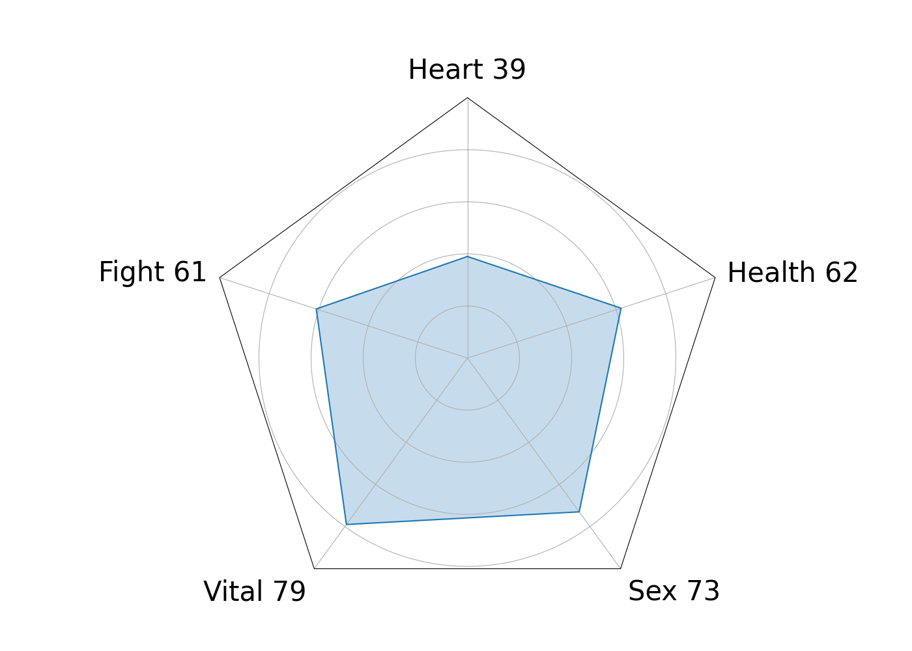

| ID： | ${userID} | 操作員 Operator： | ${Technician} |
| 性別 Jenis kelamin： | ${gender} | 儀器編號 Nomor instrumen： | ${XID} |
| 年齡 Usia： | ${Age} | 梯次 tingkat： | ${TIER} |
| 檢測項目 Aspek Pengujian | 標準範圍/單位 Kisaran/Satuan Standar |
說明 Penjelasan | |
| 心率 Heart Rate Detak Jantung |
${HR} | 60~100 kali/menit | ${HR_d} |
| N-N間距標準差 SDNN Standar Deviasi Interval N-N |
${SD} | 20 ~ 100 ms | ${SDNN_d} |
| 均方根標準差 RMSSD Akar Rata-rata Kuadrat Penyimpangan Standar |
${RMSSD} | 18.5~24.0 | ${RMSSD_d} |
| 正常R-R間距變化 RRIV Variabilitas Interval R-R Normal |
${RRIV} | lebih dari 15% | ${RRIV_d} |
| 自律神經年齡 ANS Age Usia Sistem Saraf Otonom |
${ANSAGE} | Di bawah atau sama dengan usia sebenarnya | ${ANSAGE_d} |
| 自律神經總體功能 ANS Fungsi Keseluruhan Sistem Saraf Otonom |
${ANS_AVG} | Nilai rata-rata ms2 | ${ANS_d} |
| ${ANS_SD} | Nilai standar deviasi ±1.5σ | ||
| 交感神經功能 SYM Fungsi Sistem Saraf Simpatik |
${SYM_AVG} | Nilai rata-rata % | ${SYM_d} |
| ${SYM_SD} | Nilai standar deviasi ±1.5σ | ||
| 副交感神經功能 VAG Fungsi Saraf Parasimpatik |
${VAG_AVG} | Nilai rata-rata ms2 | ${VAG_d} |
| ${VAG_SD} | Nilai standar deviasi ±1.5σ | ||
| 交感調控 SYM modulation Modulasi Simpatik SYM |
${SYM_modulation} | 0.8~1.5 | ${SYM_modulation_d} |
| 自律神經偏向 Balance Keseimbangan Sistem Saraf Otonom |
${Balance} | -1.5~1.5 | ${Balance_d} |
| HRV Chart | ||||||
|  | ||||||
| ANS AGE | HR | SD | TP | VL | HF | LF |
| ${ANSAGE} | ${HR} | ${SD} | ${TP} | ${VL} | ${HF} | ${LF} |